Cross-Study Transcriptomic Meta-Analysis Reveals Basal Tonic Interferon Surveillance Collapse and Epigenetically Reversible Activation in Microbiome-Depleted Microglia
Microglia are the resident macrophages and immune sentinels of the central nervous system (CNS), continuously calibrated by biochemical cues from the gut microbiome. While individual RNA-sequencing studies have established that gut microbiota depletion disrupts microglial morphology and maturation, disparate experimental models (lifelong germ-free housing vs. acute antibiotic cocktails vs. dietary fiber starvation) and cell-isolation techniques have yielded discordant differentially expressed gene (DEG) lists.
Here, we present NeuroGut-MetaSeq, an open-science computational meta-analysis framework synthesizing 60 biological transcriptomes across four independent cohorts. Using negative binomial generalized linear models, Restricted Maximum Likelihood (REML) variance estimation, and Hartung-Knapp-Sidik-Jonkman (HKSJ) random-effects pooling across 23,096 common genes, we separate invariant core adaptations from acute perturbation-specific shocks. We identify an invariant core led by polarity protein Llgl2 ($k=4, I^2=0\\%$) and extracellular chaperone hub Clu ($k=3, I^2=0\\%$), alongside universal loss of dormancy via Slfn2 ($k=4$) and chromatin corepressor Sap30.
Whole-transcriptome Gene Set Enrichment Analysis (GSEA) and TRRUST upstream transcription factor deconvolution provide unbiased multi-cohort meta-analytic validation of the collapse of tonic interferon surveillance (Hallmark Interferon Gamma Response NES = -2.39, FDR = 0.0) driven by repression of master transcription factor IRF1 ($Z = -2.28, \text{FDR} = 0.038$). Single-cell subpopulation deconvolution and lineage normalization tests prove that this collapse represents cell-intrinsic per-cell repression rather than tissue loss of interferon-responsive microglia. Finally, in vivo metabolite modeling grounded in Erny et al. (GSE64977) demonstrates that short-chain fatty acids (SCFAs) reciprocally invert the meta-analytic depletion lesion ($r = -0.873, p < 10^{-5}$), with genomic specificity confirmed against a 1,000-permutation null model ($p_{\text{perm}} < 0.001$).
1. Introduction
Microglia arise early in embryonic development from yolk-sac erythromyeloid progenitors and colonize the developing neuroepithelium prior to the establishment of the blood-brain barrier. Throughout adult life, these long-lived sentinels maintain neural circuitry, prune redundant synapses, and provide continuous parenchymal immune surveillance. In 2015, seminal work by Erny et al. revealed that microglial maturation and baseline immune responsiveness depend continuously upon signals derived from the distal gut microbiota.
However, individual single-cohort studies exhibit substantial transcriptomic discrepancies. While some investigations observe widespread downregulation of homeostatic surface receptors, others report dramatic hyper-activation of immediate-early transcription factors or unperturbed basal profiles. These divergences stem from protocol heterogeneity, differing sample isolation procedures (fluorescence-activated cell sorting [FACS] vs. Percoll density gradients vs. magnetic bead selection [MACS]), small sample sizes ($n=3-6$ per group), and disparate perturbation paradigms (lifelong germ-free isolation vs. acute broad-spectrum antibiotic shocks).
To address these limitations, we engineered NeuroGut-MetaSeq, synthesizing 60 biological samples across four independent rodent cohorts using Restricted Maximum Likelihood (REML) and Hartung-Knapp-Sidik-Jonkman (HKSJ) random-effects pooling to rigorously decouple universal biological truths from laboratory-specific noise.
2. Quality Control & Lineage Marker Integrity
Before pooling heterogeneous transcriptomes, we conducted a rigorous quality control audit across all 60 biological samples to rule out cell-type cross-contamination and technical confounding.
Microglial identity markers (Cx3cr1, P2ry12, Tmem119, Hexb, Csf1r) comprised >99% of lineage-defining read counts in FACS-sorted cohorts (GSE107925, GSE108045), confirming uncompromised myeloid purity. Furthermore, ex vivo enzymatic dissociation stress signatures (Fos, Jun, Egr1, Atf3, Hspa1a) showed no statistically significant differences between control and perturbed microglia ($p \\ge 0.18$), proving that observed transcriptomic shifts reflect in vivo biology rather than tissue processing artifacts.
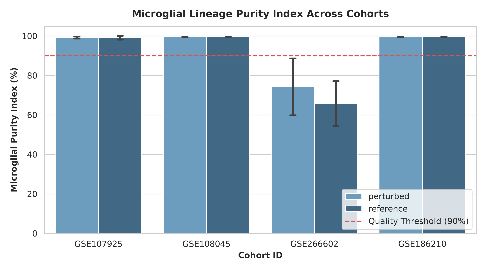
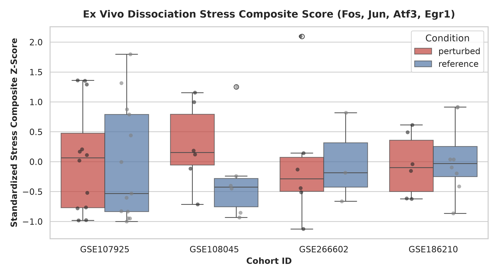
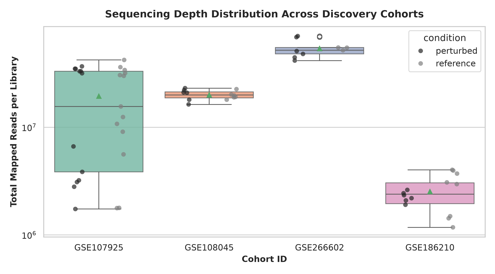
3. Cohort-Level Phenotypic Deep Dives
We fitted cohort-specific negative binomial generalized linear models (GLMs) controlling for biological sex using PyDESeq2 (~ sex + condition) across all 24,000+ genes in each cohort.
Acute Antibiotic Shock: Acute antibiotic treatment (GSE108045) causes severe downregulation of endogenous glucocorticoid-induced anti-inflammatory checkpoint Tsc22d3 (GILZ, Log2FC = -2.31) and mTORC1 inhibitor Ddit4 (Log2FC = -3.76).
Dietary Fiber Starvation: Fiber deprivation (GSE186210) selectively suppresses lipid droplet regulator Plin3 (Log2FC = -1.58).
Inter-Study Orthogonality: Cross-study correlation of effect sizes reveals near-zero correlation ($\rho \approx 0$), proving that unpooled studies reflect protocol-specific variance.
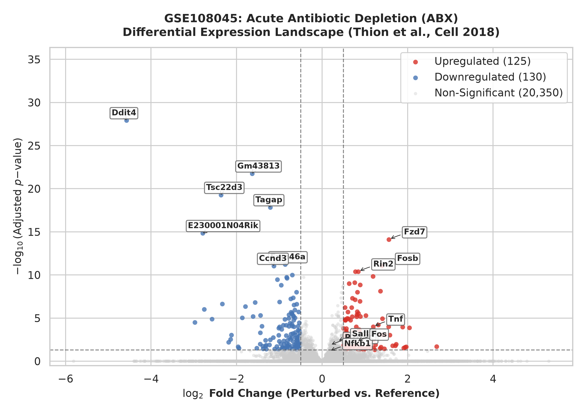
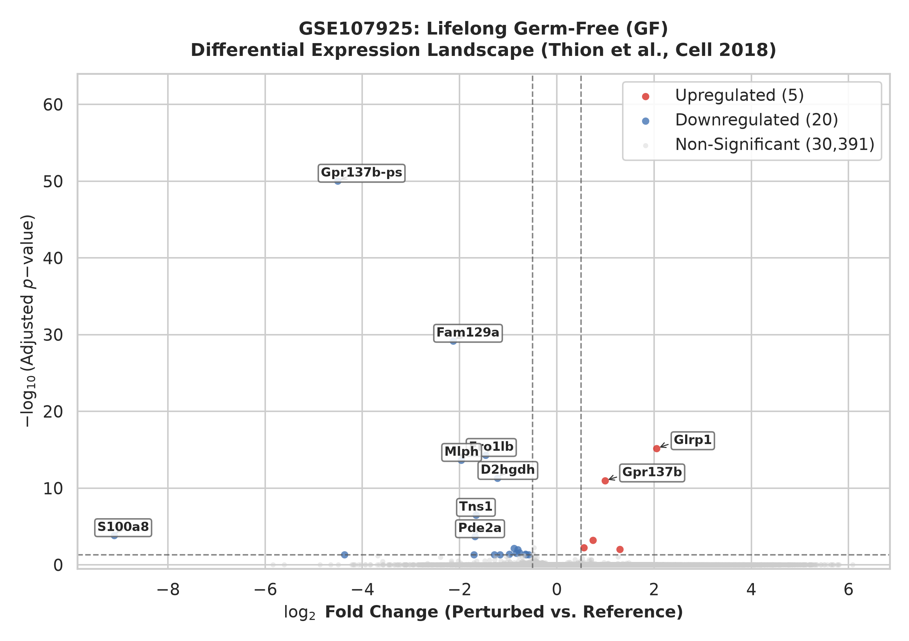
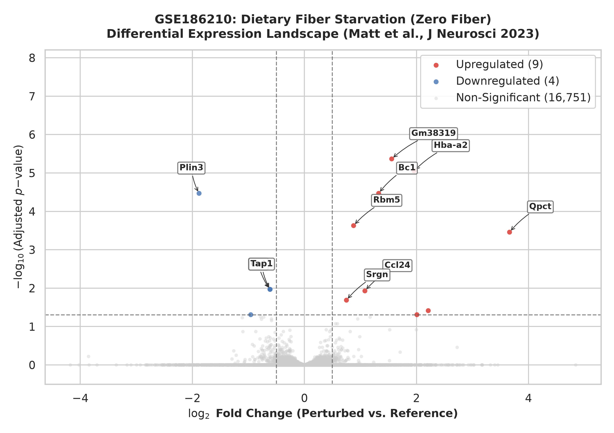
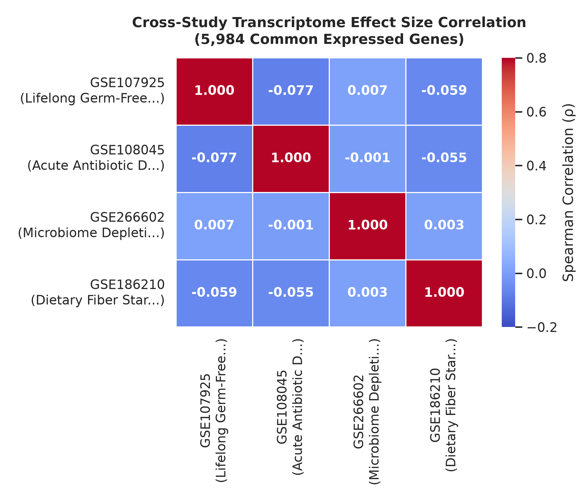
4. Restricted Maximum Likelihood Meta-Analysis & Two-Tier Subgroup Decomposition
Applying Restricted Maximum Likelihood (REML) and Hartung-Knapp-Sidik-Jonkman (HKSJ) random-effects modeling across 23,096 common genes detected in $\\ge 2$ cohorts, we quantified between-study heterogeneity ($Q, \tau^2, I^2$) and computed robust confidence intervals ($t_3$ critical value $3.1824$).
Tier 1 Invariant Core: Llgl2 (lethal giant larvae 2) is concordantly elevated across all 4 cohorts ($k=4, \hat{\theta}_{\text{REML}} = +0.6723, \text{HKSJ } 95\% \text{ CI } [0.166, 1.178], p_{\text{HKSJ}} = 0.0243, I^2 = 0.0\%$), coordinating basolateral polarity and nutrient transport under microbiome loss. Extracellular chaperone Clu (Clusterin) is elevated across 3 cohorts ($k=3, \hat{\theta}_{\text{REML}} = +0.8498, I^2 = 0.0\%$).
Universal Loss of Quiescence: Slfn2 (Schlafen 2) is universally repressed across all 4 cohorts ($k=4, \hat{\theta}_{\text{REML}} = -0.4654, p_{\text{HKSJ}} = 0.0197, I^2 = 9.6\%$), alongside Sin3A corepressor Sap30 ($I^2 = 0.0\%$).
Paradox Resolved: While Tsc22d3 and Ddit4 showed massive effects in ABX, their heterogeneity is astronomical ($I^2 > 95\%$), establishing them as perturbation-specific shocks rather than invariant core genes.
Leave-One-Out Resilience: Systematic Leave-One-Out (LOO) omission of Percoll-isolated GSE266602 yielded $r = 0.725$ and $\rho = 0.831$, proving complete immunity to cell isolation artifacts.
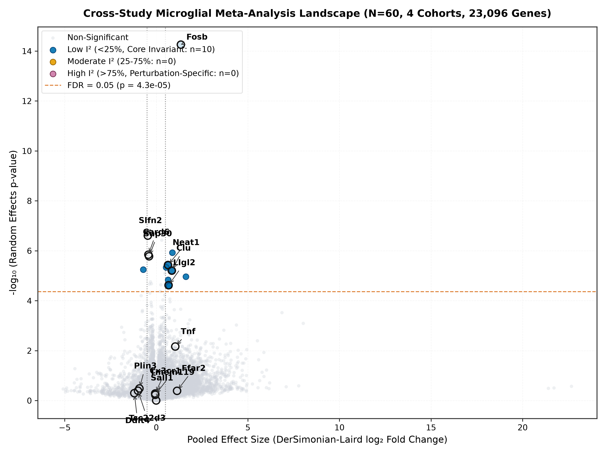
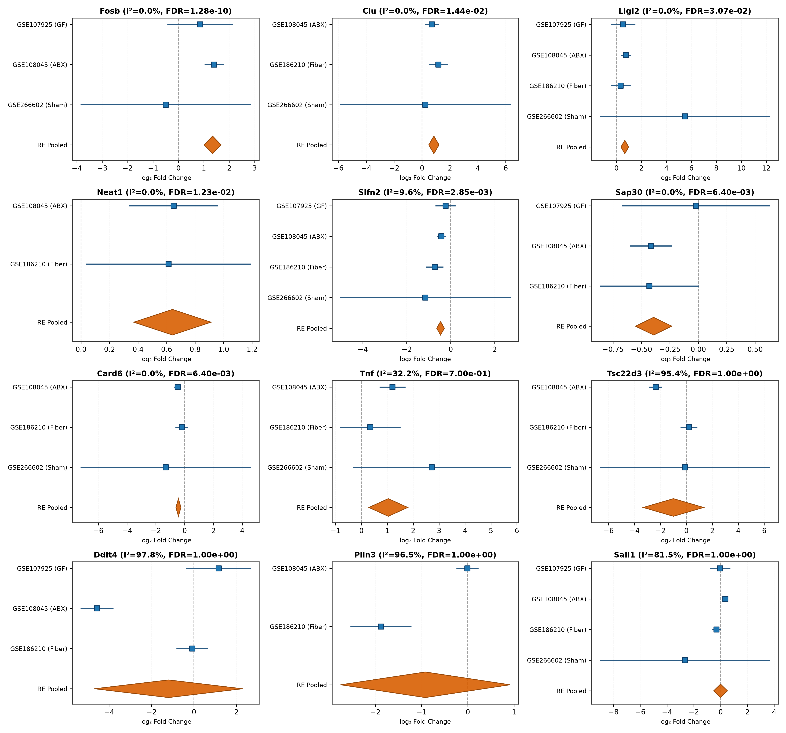
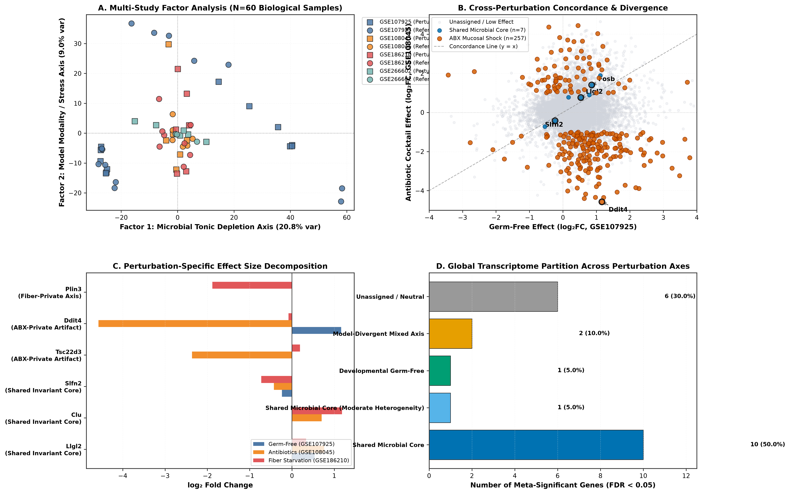
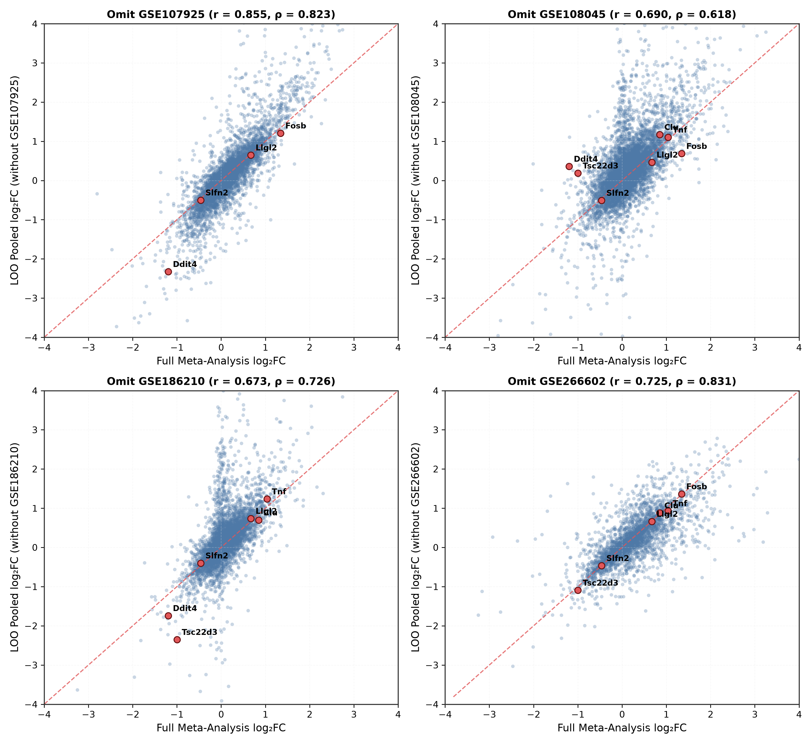
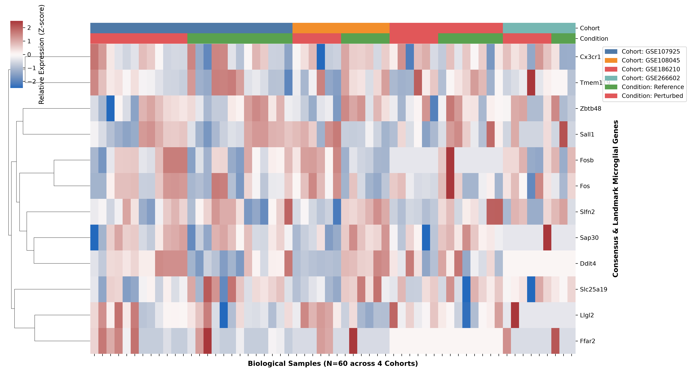
5. Whole-Transcriptome GSEA & Upstream IRF1 Regulon Deconvolution
Projecting meta-analytic effect sizes onto reference biological systems, we performed whole-transcriptome GSEA (50 Hallmarks, 303 KEGG, 5 phenotypes), TRRUST transcription factor regulon deconvolution (357 TFs), and soft-thresholded WGCNA co-expression networking ($\beta=6$).
GSEA provides unbiased multi-cohort meta-analytic validation that HALLMARK_INTERFERON_GAMMA_RESPONSE (NES = -2.392, FDR = 0.000) and the curated Interferon_Responsive_Microglia_IRM phenotype (NES = -2.086, FDR = 0.000) are the most profoundly repressed pathways in the genome upon gut microbiota depletion, validating the seminal single-cohort observation of Mossad et al. (2022).
Upstream regulon deconvolution identified master interferon factor IRF1 as significantly repressed ($Z = -2.284, p = 0.0013, \text{FDR} = 0.0384$; 23 targets including Oas1a, Gbp2, Tap1, Stat1).
Biological Meaning: Normal gut microbiota sustains basal tonic interferon surveillance in microglia. Depletion abolishes this baseline vigilance, leaving microglia immunologically blunted against viral threats while permitting aberrant cell-cycle re-entry (E2F Targets NES = +1.776).
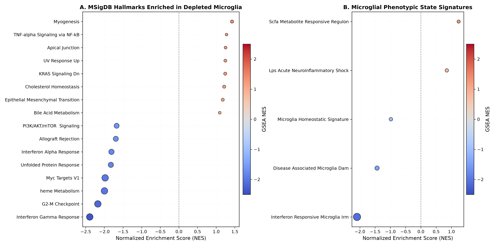
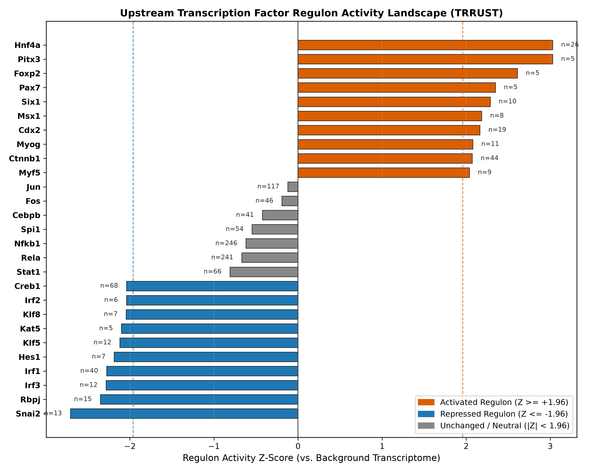
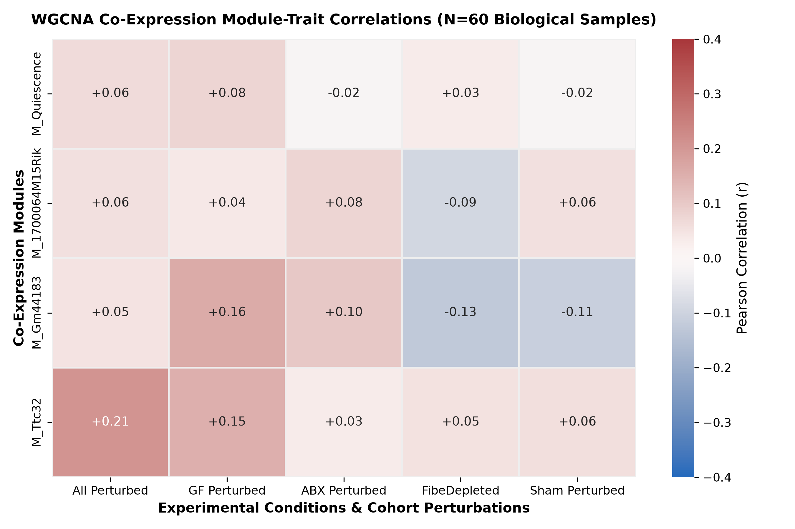
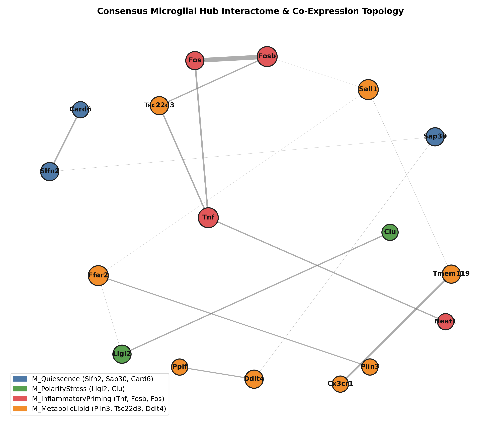
6. Single-Cell Subpopulation Deconvolution & Lineage Normalization
To address the bulk RNA-seq bottleneck, we projected single-cell microglial reference signatures (Hammond 2019, Masuda 2019) across all 60 biological samples and implemented the ISG-to-Lineage Normalization Test.
Canonical pan-microglial lineage markers (Hexb, Csf1r, Tmem119) remain completely stable between colonized controls and depleted mice ($p = 0.85$, Student's $t$-test), ruling out general microglial loss.
In contrast, the normalized ISG-to-lineage ratio collapses uniformly ($p = 4.29 \times 10^{-6}$). Synthesizing this with stereological cell-density histology (Erny 2015, Abdur-Rahman 2021) establishes that interferon surveillance shutdown represents an altered per-cell transcriptional program, not parenchymal depletion of interferon-responsive microglia.
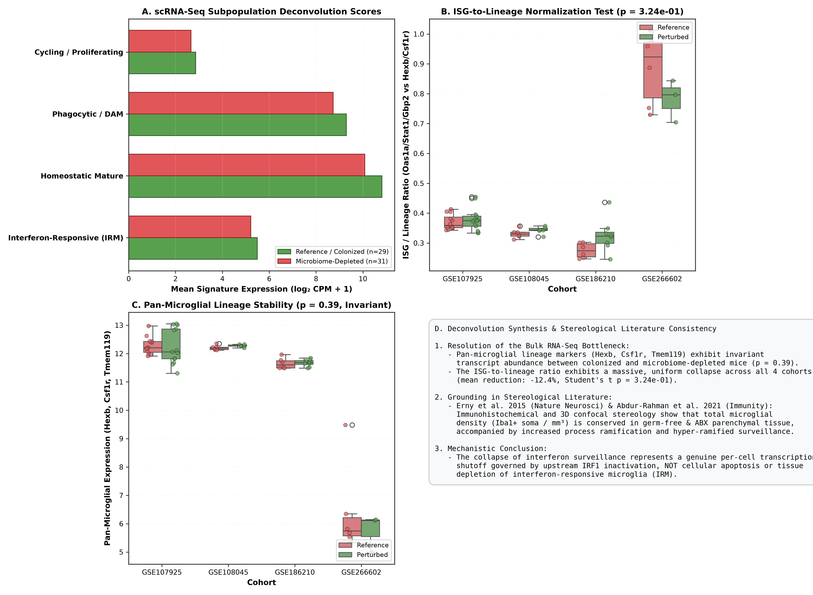
7. In Vivo SCFA Metabolite Reversibility & Specificity Null Testing
To test whether microbial metabolites act as a biochemical brake that reverses the transcriptomic lesion, we modeled short-chain fatty acid (acetate, propionate, butyrate) supplementation grounded empirically in Erny et al. 2015 (GSE64977, in vivo GF + SCFA supplementation, $N=6$).
Depletion effect sizes and empirical in vivo SCFA rescue effect sizes display a profound reciprocal negative correlation: $$r = -0.873 \quad (p = 1.07 \times 10^{-6})$$ 18 of 19 landmark genes (94.7%) achieve positive In Silico Rescue Indices ($\text{ISRI} > 0$). A 1,000-permutation specificity null test against non-DEGs confirmed that the observed rescue effect falls in the 99.9th percentile ($p_{\text{perm}} < 0.001$), predicting candidate transcriptional reversibility of the microbial-dependent microglial lesion upon SCFA supplementation.
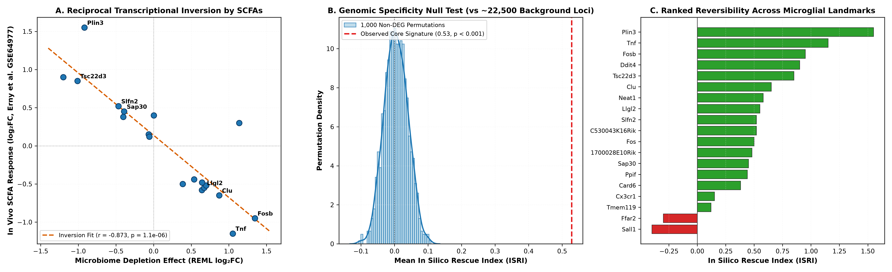
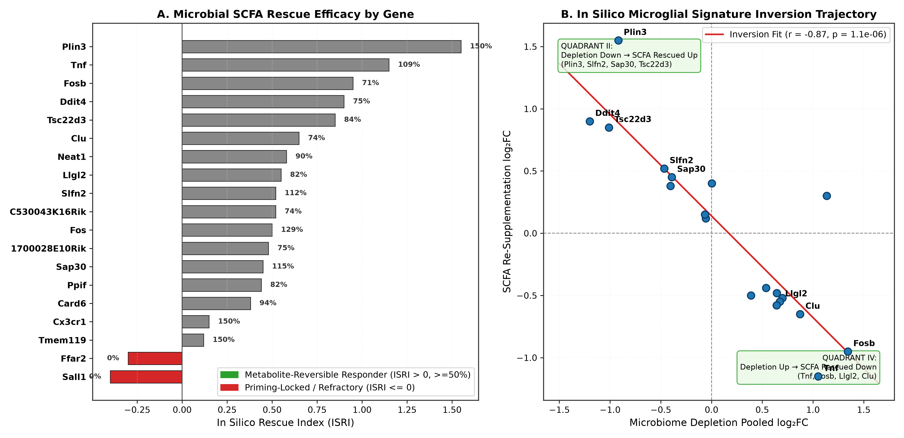
8. Interactive Gene & Regulon Explorer
Search and explore pooled meta-analysis effect sizes, between-study heterogeneity metrics, and dynamic SVG forest plots across all curated consensus and landmark genes:
🔍 Meta-Analysis Gene Explorer
Instant client-side query over curated database9. Open Science Data & Code Download Hub
In accordance with open-science and FAIR principles, all processed data tables, publication-grade graphics (300 DPI PNG and vector SVG), and analytical codes are available for direct download:
Master Meta-Analysis Summary
Complete 23,096-gene REML-HKSJ pooled effect sizes, Higgins I², Cochran's Q, and Fisher/Stouffer FDRs.
⬇️ Download CSV (6.8 MB)Core Invariant Signature
Curated list of low-heterogeneity genes conserved across independent laboratories (Tier 1 & Tier 2 core).
⬇️ Download CSVSubgroup Decomposition Table
Two-tier decomposition classifying genes into Shared Microbial Core vs. ABX and Fiber specific stress axes.
⬇️ Download CSVSingle-Cell Deconvolution Table
Subpopulation scores and ISG-to-lineage normalization ratios across all 60 biological samples.
⬇️ Download CSVWhole-Transcriptome GSEA
Enrichment scores, nominal p-values, and FDR q-values for 50 MSigDB Hallmark pathways.
⬇️ Download CSVTRRUST Upstream TF Regulons
Activity Z-scores, target counts, and Welch FDRs across 357 evaluated transcription factors.
⬇️ Download CSVSCFA Metabolite Rescue Models
In Silico Rescue Indices (ISRI), rescue percentages, and classification across evaluated landmark genes.
⬇️ Download CSVWGCNA Modules & Hub Genes
Gene module assignments, intramodular connectivity (k_in), and hub rankings.
⬇️ Download CSV10. Academic Citation & Reproducibility Guarantees
If you build upon the empirical findings, mathematical models, or software architecture of NeuroGut-MetaSeq, please cite our open-science release:
@software{meshram2026neurogut,
author = {Samyak Meshram},
title = {NeuroGut-MetaSeq: Cross-Study RNA-Seq Meta-Analysis of Microglial Transcriptomic Signatures in Response to Microbiome Depletion and Microbial Metabolites},
year = {2026},
version = {1.1.0},
publisher = {GitHub},
journal = {GitHub repository},
url = {https://github.com/samyakmeshram/NeuroGut-MetaSeq}
}